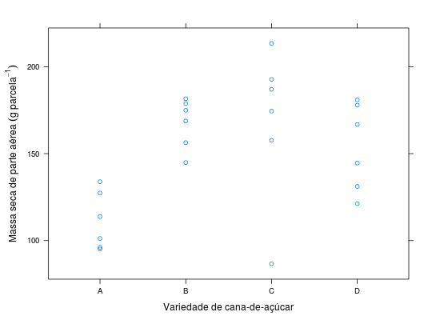

Resultados de um experimento conduzido em casa de vegetação em delineamento inteiramente casualizado para avaliar a massa seca de parte aérea de variedades de cana-de-açúcar. A unidade experimental (parcela) era um vaso com 3 plantas.
Um data.frame com 24 observações e 3 variáveis, em que
variedreptmspaCosta (2013), Tabela 4, pág. 58.
library(lattice) data(CostaTb4)#> Warning: data set ‘CostaTb4’ not foundstr(CostaTb4)#> 'data.frame': 24 obs. of 3 variables: #> $ varied: Factor w/ 4 levels "A","B","C","D": 1 2 3 4 1 2 3 4 1 2 ... #> $ rept : int 1 1 1 1 2 2 2 2 3 3 ... #> $ mspa : num 114 175 213 167 134 ...aggregate(mspa ~ varied, data = CostaTb4, FUN = function(x) { c(mean = mean(x), var = var(x)) })#> varied mspa.mean mspa.var #> 1 A 111.2650 273.1223 #> 2 B 167.5500 203.5780 #> 3 C 168.6450 1957.7516 #> 4 D 153.7650 628.3516xyplot(mspa ~ varied, data = CostaTb4, xlab = "Variedade de cana-de-açúcar", ylab = expression(Massa~seca~de~parte~aérea~(g~parcela^{-1})))